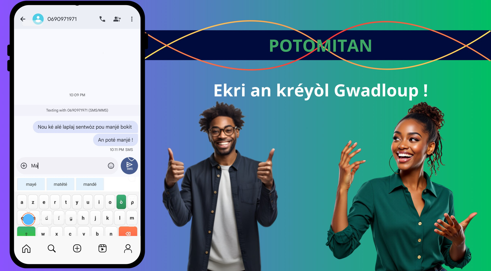
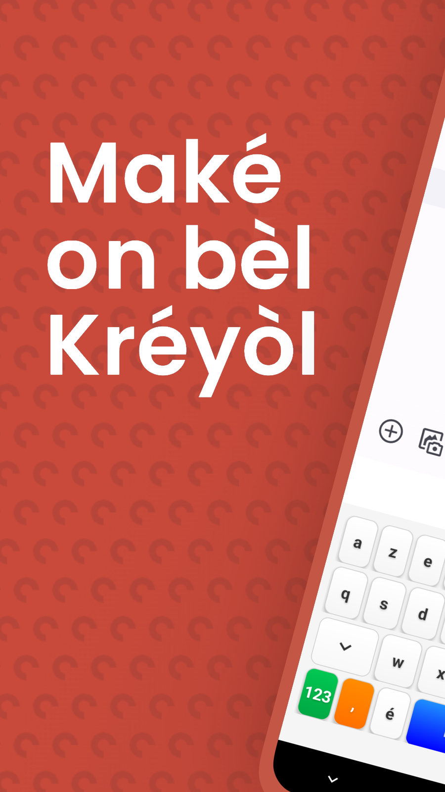
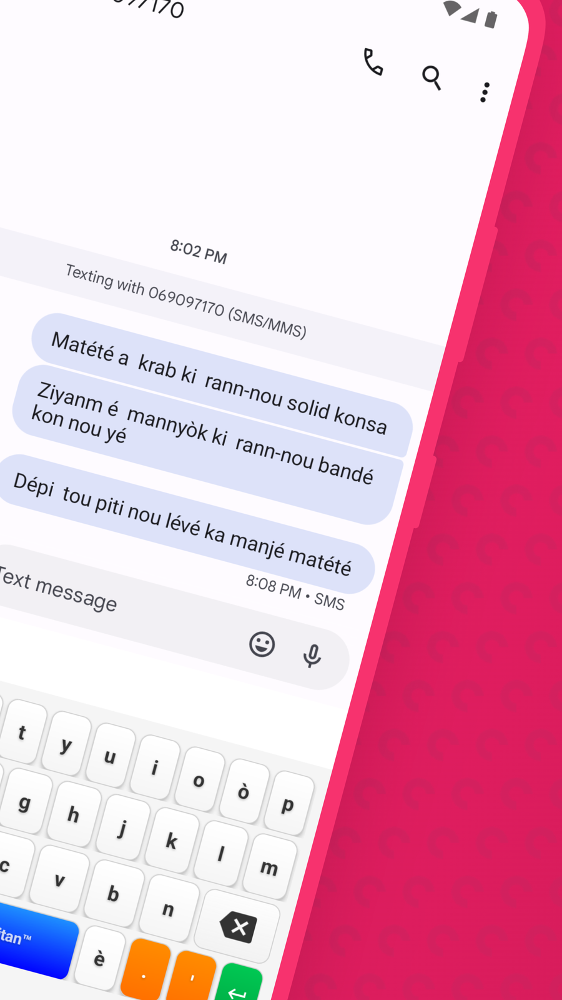

Ékri kréyòl asi téléfòn aw !
😤 Si tu galères à écrire en kréyòl parce que ton téléphone refuse tous les mots
🤔 Que tu doutes de l'orthographe à chaque message …
🛠️ Que ton kréyòl est très rouillé…
⚡ Suggestions ultra-rapides basées sur les plus grands textes kréyòl
🎯 Prédictions contextuelles qui comprennent ta pensée
100% gratuit · Zéro pub · Open source · Zéro collecte de données



📲 Télécharge Klavyé Kréyòl
📱 Klavyé Kréyòl Karukera est un clavier intelligent conçu pour répondre à un besoin fondamental : permettre aux Guadeloupéens d'écrire facilement en Kréyòl Gwaloup sur leur smartphone, avec fluidité, authenticité et fierté.
Créé par un Guadeloupéen pour les Guadeloupéens 🏝️·famibelle.github.io/KreyolKeyb·contact@potomitan.io